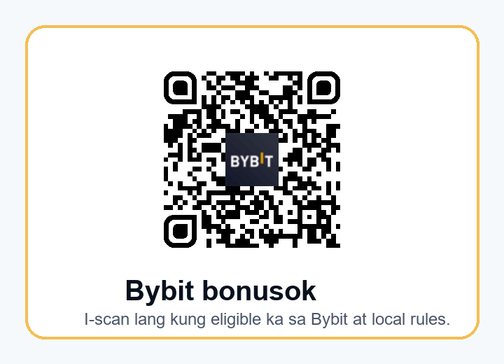

Bybit referral code bonusok sa Filipino: gabay para sa active traders sa Pilipinas
Mabilis na sagot: ang Bybit referral code sa campaign na ito ay bonusok, at ang official partner link ay https://partner.bybit.com/b/bonusok. Pero kung Filipino trader ka, hindi sapat na malaman lang ang code. Mas mahalaga ang unang checklist: legal at available ba ang serbisyo sa iyong tunay na residence at KYC profile, nakikita ba ang reward task sa Bybit Rewards Hub, malinaw ba ang bonus terms, at naiintindihan mo ba ang risk bago ka mag-deposit o mag-trade?
Ginawa ang guide na ito para sa mga naghahanap ng "Bybit referral code Philippines", "Bybit promo code", "Bybit bonus code", "Bybit invite code", "bonusok", at mga bagong Bybit feature para sa mas seryosong trader: AI Subaccount, XAUT Options, RWA Earn, USD1 Hold & Earn, Retail Price Improvement o RPI para sa API taker orders, at SBE Order Entry para sa professional execution. Hindi ito official page ng Bybit. Independent referral/educational material ito, at may malinaw na disclosure sa ibaba.
Disclosure: may referral link ang page na ito. Maaari kaming makatanggap ng commission kung mag-register ka o mag-trade gamit ang link. Crypto trading ay mataas ang risk. Puwedeng magbago ang presyo nang mabilis; futures, options, margin, bots, AI trading at API execution ay puwedeng magdulot ng malaking loss; Earn at RWA products ay hindi bank deposit; at ang bonus o reward ay nakadepende sa KYC, region, account status, deposit, trading activity, campaign period at Bybit rules.
1. Philippines muna: SEC, BSP, KYC at local eligibility
Para sa audience sa Pilipinas, ang tamang simula ay hindi "mag-click agad". Ang tamang simula ay regulatory at eligibility check. Sa official Bybit Service Restricted Countries page na na-update noong May 7, 2026, hindi nakalista ang Philippines sa core excluded jurisdictions, ngunit hindi ibig sabihin nito na automatic nang puwede ang lahat ng produkto sa lahat ng Filipino users. Bybit mismo ang nagsasabi na puwede nitong i-terminate ang service sa jurisdictions na pipiliin nito, at ang maling representation ng location o residence ay puwedeng magresulta sa account termination at liquidation ng open positions.
Sa Pilipinas, may sariling framework ang regulators para sa virtual assets. Ang Bangko Sentral ng Pilipinas ay may VASP guidelines sa Circular No. 1108, na naglalagay ng rules sa licensing, AML/CFT, customer protection, custody, cybersecurity at governance para sa virtual asset service providers. Noong 2025, naglabas din ang Philippine SEC ng CASP rules para sa crypto-asset service providers, kung saan mas mahigpit ang registration, disclosure at marketing expectations. Ibig sabihin: kahit ang global exchange ay accessible sa browser, kailangang i-check ng user kung compliant at available ang partikular na serbisyo sa kanyang situation.
Kaya ang guide na ito ay hindi nagtuturo ng VPN, fake address, borrowed KYC, multi-account o kahit anong paraan para i-bypass ang restriction. Kung hindi malinaw ang local rule, kung hindi tugma ang KYC residence, o kung ang product ay hindi available sa account mo, ang pinakamagandang trade ay no trade. Ang goal natin ay makakuha ng active traders na may long-term retention, hindi low-quality signups na posibleng ma-block o ma-disqualify sa reward.
2. Ano ang Bybit referral code bonusok?
Ang bonusok ay referral code na ginagamit sa partner path na ito: https://partner.bybit.com/b/bonusok. Kapag binuksan mo ang link, siguraduhing tama ang domain: partner.bybit.com o official Bybit domain pagkatapos ng redirect. Iwasan ang random Telegram DM, shortened link, screenshot na hindi mo ma-verify, at website na mukhang Bybit pero hindi official domain.
Pagkatapos ng registration, huwag agad mag-deposit. Una, tingnan kung may referral attribution o task sa account. Pangalawa, buksan ang Rewards Hub at basahin ang exact task. Pangatlo, i-check ang KYC level at region. Pang-apat, tingnan kung ang reward ay kailangan ng deposit, spot trading, derivatives volume, Earn subscription, AI Subaccount task, o ibang requirement. Panglima, siguraduhin na ang task ay accepted bago ka gumawa ng volume, kung iyon ang hinihingi ng campaign.
Sa internal offer database natin, ang Bybit campaign ay may wording na bonuses up to $30,000 sa code bonusok. Pero sa public material, hindi ko ito ginagamit bilang pangakong siguradong matatanggap. Ang "up to" ay maximum conditional value. Puwedeng iba ang reward na makita mo, puwedeng hindi ka eligible, puwedeng matapos ang campaign, at puwedeng baguhin ni Bybit ang terms. Kaya mas mataas ang value ng guide na ito kung matututo kang mag-check ng eligibility kaysa kung basta ka lang maghabol ng headline bonus.

QR check
Ang QR code sa image ay galing sa real local QR file at na-decode bago i-publish. Target nito: https://partner.bybit.com/b/bonusok. Hindi ito AI-generated QR. Kahit verified ang QR, i-check mo pa rin ang address bar kapag binuksan mo ang link.
3. Bakit ito relevant sa active Filipino traders ngayon?
Kung generic bonus page lang ang gagawin, madaling makakuha ng click pero mahina ang quality. Mas magandang angle para sa Pilipinas ay "Bybit as an advanced trading stack, only if eligible". Maraming Filipino users ang sanay sa mobile-first crypto usage, P2P, stablecoins, spot trading, exchange comparisons at social trading. Pero ang may mas mataas na referral value ay hindi lang naghahanap ng libreng bonus. Siya ang trader na nagtatanong tungkol sa execution, risk, capital allocation, API, yield terms, gold exposure, at paano ihiwalay ang experimental strategy sa main account.
AI Subaccount: automation, pero hindi autopilot profit
Noong June 17, 2026, inanunsyo ni Bybit ang AI Subaccount campaign. Ayon sa announcement, ang AI Subaccount ay para sa AI-powered execution na puwedeng mag-run 24/7, at may tasks tulad ng Identity Verification Lv. 1, pag-create ng first AI Subaccount, at first AI trade na 500 USDT o higit pa. May prize pool at guaranteed draw mechanics, pero malinaw din sa terms na restricted-country users are not eligible, at ang wash trading, multi-account operations, duplicate identities at suspicious activity ay grounds for disqualification.
Para sa active trader, ang tamang framing ng AI Subaccount ay sandbox. Huwag ibigay ang buong capital sa AI. Huwag magbigay ng withdrawal permission sa API. Limitahan ang instruments, max position, leverage, daily loss at trade frequency. Maglagay ng manual kill switch. Kung hindi mo kayang i-explain ang strategy rules, hindi dapat malaki ang allocation. Ito ang klaseng message na mas nakakaakit ng seryosong trader kaysa sa hype na "let AI make money for you".
XAUT Options: gold narrative para sa advanced users
Noong June 12, 2026, nag-launch ang Bybit ng XAUT options para sa tokenized gold. Malakas ito bilang Filipino content hook dahil pamilyar sa maraming Pinoy ang gold bilang store-of-value narrative, pero ang XAUT Options ay hindi simpleng pagbili ng physical gold. Options ito, kaya may premium, strike, expiry, implied volatility, liquidity, RFQ at hedging mechanics. Kung hindi pa naiintindihan ng user ang options risk, hindi ito dapat maging first trade.
Maganda itong banggitin sa referral page dahil ipinapakita nito na Bybit ay hindi lang bonus exchange; may advanced products para sa traders na may macro view, volatility thesis, at hedging need. Pero sa CTA, dapat lagi pa ring mauna ang risk education at eligibility.
RWA Earn at USD1 Hold & Earn: basahin ang terms bago ang APR
Noong June 15, 2026, inanunsyo ni Bybit ang RWA Earn, isang platform para sa institutional real-world asset opportunities gamit ang stablecoin subscriptions. May promotional APR boost event at products tulad ng PIMCO Dynamic Income Opportunities Fund exposure at investment grade bond fund exposure, pero may important risk disclosure: hindi principal protected ang RWA Earn products, at puwedeng gumalaw ang value dahil sa market conditions, interest rates, credit performance, liquidity conditions at iba pang factors.
Noong June 18, 2026, may USD1 Hold & Earn Month 2 campaign din: WLFI rewards, up to 16% APR, hourly snapshots, minimum USD1 holdings, at daily reward formula. Again, hindi ito simpleng "free yield". Open lang ito sa eligible Savings users, kailangan ng Identity Verification Lv.1, at participants from Service Restricted Countries are not eligible. Ang APR ay dynamic at depende sa budget at total effective holdings. Para sa Filipino user, ang tamang tanong ay: eligible ba ako, available ba ang product, ano ang stablecoin risk, at kaya ko bang tanggapin na reward mechanics can change?
RPI at SBE: signal para sa API at professional traders
Noong May 25, 2026, inanunsyo ni Bybit na available na ang RPI liquidity para sa API taker orders sa Spot at Derivatives markets gamit ang optional opt-in setting na rpiTakerAccess=true. Ayon sa Bybit, default false ito, kaya hindi nito babaguhin ang existing API flow kung hindi mag-o-opt in ang client. May 50ms delay sa OpenAPI with RPI access, at dapat bantayan ng trader ang acknowledgements, especially sa rare engine restart scenarios.
Noong June 2, 2026, ipinakilala rin ang SBE Order Entry, isang high-performance WebSocket order channel para sa institutional at professional traders. Built on Simple Binary Encoding, sinusuportahan nito ang order creation, replacement, cancellation, single at batch order requests. Hindi ito bagay sa beginner page, pero bagay ito sa material na gustong makaakit ng mas capitalized o systematic traders. Kung may user na nagbabasa hanggang sa RPI/SBE section, mas mataas ang chance na hindi siya one-click bonus hunter.
4. 30-point checklist bago gamitin ang bonusok
- I-confirm ang tunay mong residence at KYC country.
- Basahin ang Bybit Service Restricted Countries page.
- I-check ang Philippine SEC/BSP rules at kung ano ang allowed sa iyo.
- Huwag gumamit ng VPN para magpanggap ng ibang location.
- Huwag gumamit ng ibang tao na KYC o borrowed account.
- Buksan lang ang verified partner link:
https://partner.bybit.com/b/bonusok. - I-check kung lumabas ang code o attribution sa account.
- Buksan ang Rewards Hub bago mag-deposit.
- I-accept muna ang task kung required ng campaign.
- Basahin ang campaign period at timezone.
- Alamin kung spot, derivatives, Earn, AI o deposit ang counted activity.
- Alamin kung may minimum deposit o minimum volume.
- Alamin kung may excluded pair, zero-fee pair o wash trading rule.
- Mag-test muna ng maliit na deposit kung magpapatuloy ka.
- Mag-test ng withdrawal path bago maglagay ng malaking capital.
- I-on ang 2FA, anti-phishing code at withdrawal whitelist.
- Huwag magbigay ng API withdrawal permission.
- Kung gagamit ng AI Subaccount, limitahan ang capital at instruments.
- Kung gagamit ng futures, itakda ang max loss bago pumasok.
- Kung gagamit ng options, intindihin muna ang strike, expiry at premium.
- Kung gagamit ng RWA Earn, basahin kung principal protected ba o hindi.
- Kung hahawak ng USD1, intindihin ang stablecoin at issuer risk.
- Kung API trader ka, testnet o small-size muna bago RPI/SBE production.
- Itabi ang screenshots ng task, terms at reward status.
- Huwag gumawa ng multiple accounts para sa bonus.
- Huwag gumawa ng artificial volume o wash trading.
- Huwag palakihin ang leverage para lang maabot ang reward.
- I-review ang fees, spread, funding at slippage bago mag-trade.
- Kung hindi malinaw ang eligibility, magtanong muna sa official support.
- Kung may alinlangan, huwag mag-trade. Mas mura ang missed bonus kaysa frozen account.
5. Sino ang dapat magbasa nito?
Bagong user sa Pilipinas: gamitin ang page bilang safety checklist. Kung hindi mo pa alam ang KYC, local rules, deposit/withdrawal path at reward mechanics, huwag munang mag-trade. Ang pinakamahalagang benefit ng referral page ay hindi ang bonus; ito ang pag-iwas sa maling unang hakbang.
Spot trader: tingnan ang code attribution, fee schedule, liquidity, deposit/withdrawal test at security. Hindi mo kailangang gumamit agad ng futures, options o AI para lang sa reward.
Futures trader: siguraduhin na legal at available ang derivatives sa iyo. Basahin ang liquidation mechanics, funding rate, cross vs isolated margin, stop loss discipline at position sizing. Kung reward lang ang dahilan ng leverage, mali ang setup.
AI/bot trader: AI Subaccount ay interesting dahil puwedeng ihiwalay ang strategy at capital. Pero kailangan pa rin ng limit, monitoring, kill switch at audit log. Automation without supervision is not risk management.
API/systematic trader: RPI at SBE ang mas interesting kaysa generic bonus. I-check ang documentation, latency assumptions, order state handling, reconnect logic, rate limits, acknowledgements, edge cases at production rollout plan.
Yield seeker: RWA Earn at USD1 Hold & Earn ay may interesting mechanics, pero hindi ito bank savings. Basahin ang product risk, eligibility, redemption, reward formula at jurisdiction restrictions.
6. FAQ sa Filipino
Bybit referral code bonusok ba ay guaranteed bonus?
Hindi. Ang code ay referral path. Ang actual reward ay nakadepende sa terms, KYC, region, account status, task acceptance, deposit, volume, campaign period at Bybit final decision.
Puwede ba ang Bybit sa Pilipinas?
Hindi nakalista ang Philippines sa Bybit Service Restricted Countries page na nakita noong June 30, 2026, pero kailangan pa ring i-check ang Philippine SEC/BSP rules, product availability at sariling KYC/residence status. Ang page na ito ay hindi legal advice.
Ano ang pinaka-importanteng step bago mag-deposit?
I-check ang domain, KYC eligibility, Rewards Hub task at local rule. Kung hindi mo makita ang task o hindi malinaw ang eligibility, huwag munang mag-deposit.
Safe ba ang AI Subaccount?
Mas safe lang ito kung ginagamit bilang isolated sandbox na may maliit na capital, limited permissions, max loss at monitoring. Hindi nito inaalis ang market risk.
Para kanino ang XAUT Options?
Para sa advanced traders na naiintindihan ang gold exposure, options pricing, volatility, expiry at liquidity. Hindi ito ideal first product para sa beginner.
Ang RWA Earn ba ay parang bank deposit?
Hindi. Bybit mismo ang naglalagay ng risk disclosure na hindi principal protected ang RWA Earn products at puwedeng gumalaw ang value dahil sa market, credit, rate at liquidity conditions.
7. Mga source na ginamit
- Bybit Help Center: Service Restricted Countries
- Bybit: Let AI trade for you / AI Subaccount
- Bybit: XAUT Options for tokenized gold
- Bybit: RWA Earn launch
- Bybit: USD1 Hold & Earn Month 2
- Bybit: RPI liquidity for API taker orders
- Bybit: SBE Order Entry
- Bangko Sentral ng Pilipinas: Circular No. 1108, VASP Guidelines
8. Final na rekomendasyon
Kung ang hanap mo ay isang linya lang, ito iyon: gamitin lang ang Bybit referral code bonusok kung legal, available at malinaw ang eligibility sa iyong tunay na KYC/residence profile. Kung eligible ka, buksan ang official partner link, i-check ang Rewards Hub, basahin ang task, at magsimula sa maliit na test. Kung hindi eligible, huwag maghanap ng workaround.
Para sa active Filipino traders, ang value ng Bybit ngayon ay hindi lang bonus. Mas compelling ang combination ng AI Subaccount, XAUT Options, RWA Earn, USD1 Hold & Earn, RPI at SBE, dahil ipinapakita nito ang exchange bilang advanced stack para sa automation, gold/volatility exposure, stablecoin yield mechanics at API execution. Pero bawat isa sa mga feature na ito ay may sariling risk, rules at product availability. Ang magandang referral ay hindi nagmamadali; nagfi-filter muna.
Last checked: 2026-06-30. This is not official Bybit, legal, financial or tax advice.